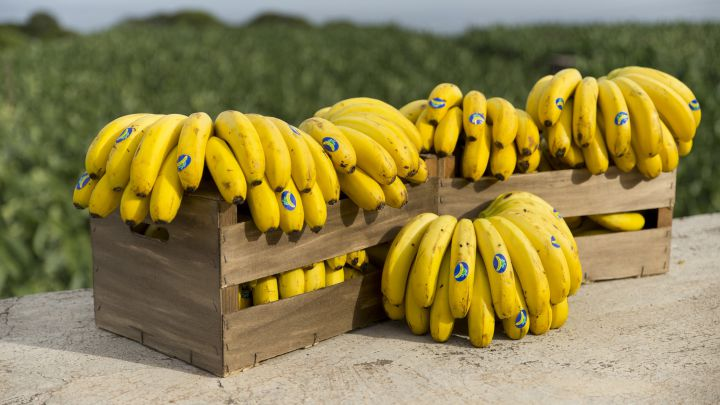

PLATANO DE CANARIAS
El Plátano de Canarias, debe sus características específicas a su zona de producción, las islas Canarias. Su configuración montañosa y su abrupto relieve unido al variado clima de las Islas, con temperaturas suaves y poco contrastadas, han permitido la producción de un producto único, Plátano de Canarias. Por otro lado, las condiciones edafológicas que requiere el cultivo de la platanera han exigido a los agricultores canarios, a lo largo de la historia, un gran esfuerzo, puesto que su cultivo requiere crear bancales o terrazas donde sólo había piedras volcánicas. Además, cabe destacar que las fincas de platanera en Canarias son generalmente de pequeño tamaño, localizadas en zonas con una orografía accidentada, lo que se traduce en una difícil mecanización. En total, unos 8.200 agricultores se encargan de la producción de forma artesanal, en una región donde más del 80% de las explotaciones son inferiores a una hectárea.
El Plátano de Canarias es de la variedad Cavendish del género Musa (AAA) spp., la variedad que le ha proporcionado su identidad. Es un fruto climatérico y como tal, sus características están relacionadas directamente con estado de madurez en que se encuentra. Su color varía desde el verde en el momento de la recolección hasta el amarillo intenso en el momento de consumo, mientras que las tonalidades de la pulpa van del blanco crema al amarillo. Su forma de dedo es oblongo, con marcada curvatura y pequeño tamaño pudiendo ser de hasta 14 cm de longitud y 27 mm de grosor.
En cuanto a su sabor, es dulce intenso. Su dulzor característico e inigualable, es resultado de su alto contenido en azúcares que llega al veinte por ciento de su peso en plena madurez, haciendo de él, un alimento muy energético y de fácil digestibilidad. Este contenido en azúcares se caracteriza por un mayor contenido de azúcares solubles y menor de almidón. Además, son ricos en potasio y fósforo. Su textura es levemente resistente a la mordida, suave y tersa a la vez, jugosa, compacta pero blanda.